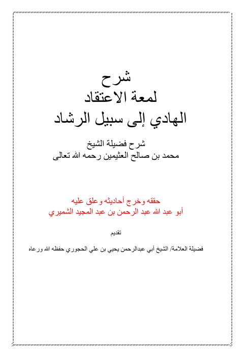

Downloads need an internet connection.
شرح لمعة الاعتقاد الهادي إلى سبيل الرشاد
Authors: محمد بن صالح العثيمين
Editors: عبد الرحمن بن عبد المجيد الشميري
Publishers: مكتبة دار الحديث
**▫️ العنوان: شرح لمعة الاعتقاد الهادي إلى سبيل الرشاد** ▪️ المؤلف: #محمد_بن_صالح_العثيمين ▫️ المحقق: #عبد_الرحمن_بن_عبد_المجيد_الشميري ▪️ الناشر: #مكتبة_دار_الحديث ▫️ تاريخ النشر: 2010م 1431 ▪️ الطبعة: 1 ▫️ عدد الأجزاء: 1 ▪️ الصفحات: 229 ▫️ نوع الوعاء: #كتاب ▪️ التصنيف الرئيسي: #العقيدة_والمذاهب_والأديان ▫️ التصنيف الفرعي: #البدع_والمحدثات ۪